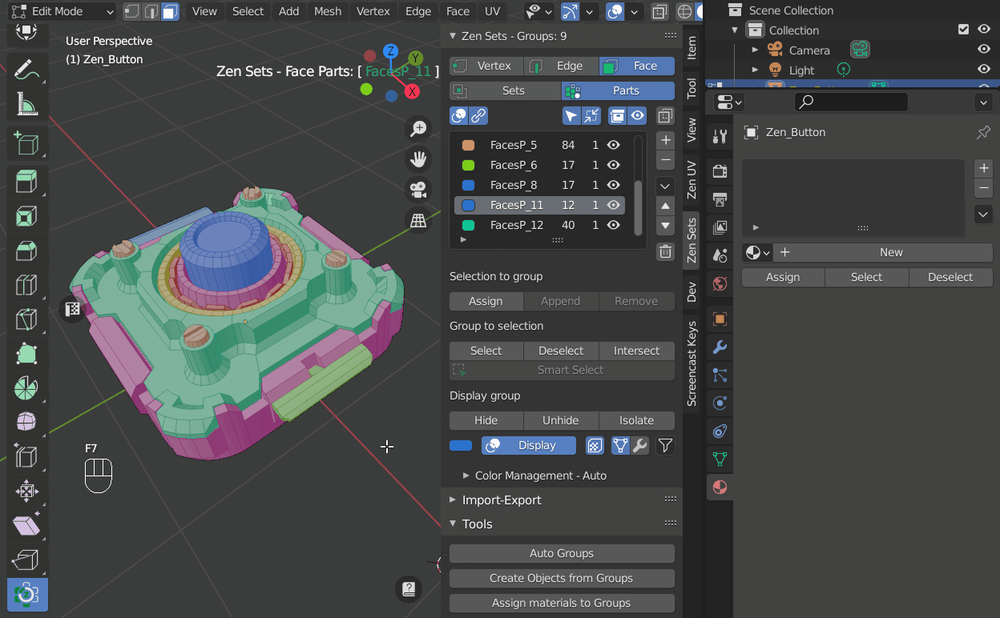
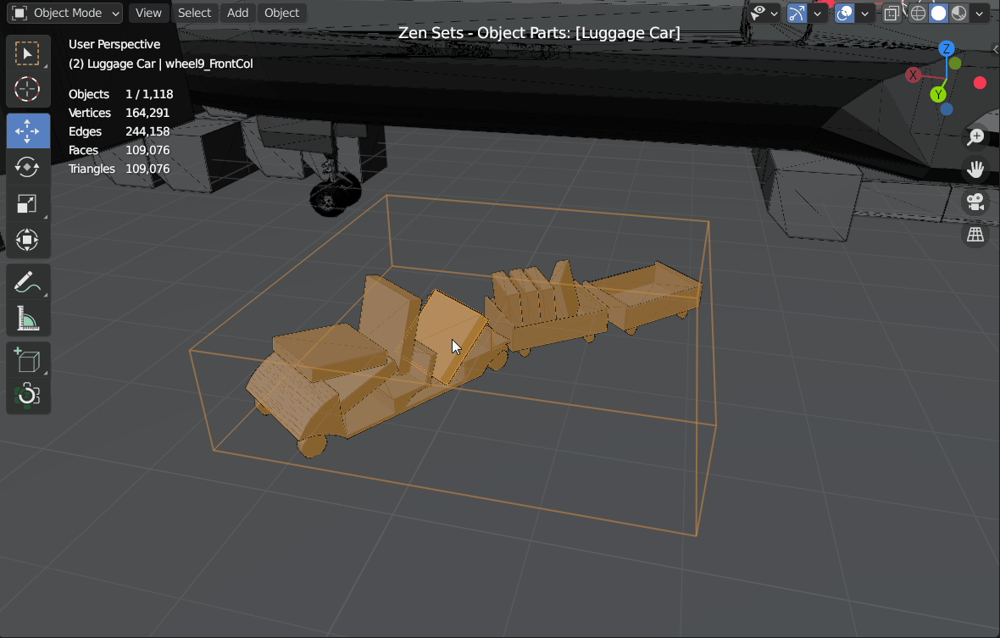

Tools

Edit Mesh Tools
Auto Groups

Auto Groups by custom operator

Create Objects from Groups

Assign materials to Groups

Split Group edges

Mark and clear seams
The menu options marks or clear seams in the Selected Group

Assign to Pinned Group
Notice
This option is available only in Sets Mode
Assign UV Borders To Group
Notice
This option is available only in Edge Sets Mode
Object Tools
Batch Rename Groups

Duplicate Collection
This will create a visually-identical copy of the Active Collection object(s).
This copy are new objects, which share data-blocks with the original objects (by default, all the materials, textures, and F-curves), but which has copied others, like the mesh, for example. That is why this form of duplication is sometimes called shallow link, because not all data-blocks are shared; some of them are hard copied!

Duplicate Collection Linked
You also have the choice of creating a Linked Duplicate rather than a Duplicate; this is called a deep link.
This will create a new object with all of its data linked to the original object. If you modify one of the linked objects in Edit Mode, all linked copies are modified. Transform properties (object data-blocks) still remain copies, not links, so you still can rotate, scale, and move freely without affecting the other copies.

Duplicate as Instance
This creates an instance of the collection with the transformation of the object. Collection instancers can be animated using actions, or can get a Proxy.